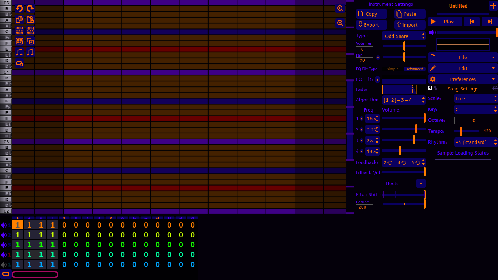

[Projects]
Welcome to the terminal, [User]. Here is where I put projects, and (probably) links to them. This ranges from songs to literally anything. There will also be events and news here. Feel free to look around. There's no one to steal your data here. Probably. Maybe the Spamton in my walls wants your credit card info.
[Active-Projects]
Jordanbox
Jordanbox is a mod of AbyssBox, which is a mod of UltraBox, which is a mod of GoldBox, which is a mod of JummBox, which is a mod of the original BeepBox. My goal with it is just to have fun making something other than this site. Also helps in learning things like HTML and stuff a little bit.

[Finished-Projects]
Jordan Trouble V5
The 5th version of a FNF song. Will be put in the FNF sub-page for the Music page when I can share. Until then, it isn't exactly public. I don't have a lot to say that isn't gonna be saved for the FNF Music Page.
[Cancelled/Paused-Projects]
Jordanbox - Incredibox
I'm not working on this for now and probably won't for a while. It was an Incredibox mod for my characters, and was planning on having at least 3 versions. I'm probably never going to even finish the first version. The account, and its mod, is still up on Scratch.
[News]
5/12/2026 - Birthday Coming Up!
My birthday, this May, is happening! Wish me happy birthday in the contacts page if you're willing. It will be on the 25th.
I'm a real boy!
[Upcoming-Events]
Nothing so far.
Nothing's planned yet. Be patient, there'll be something.